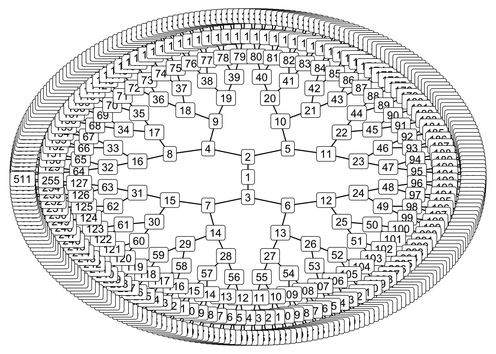
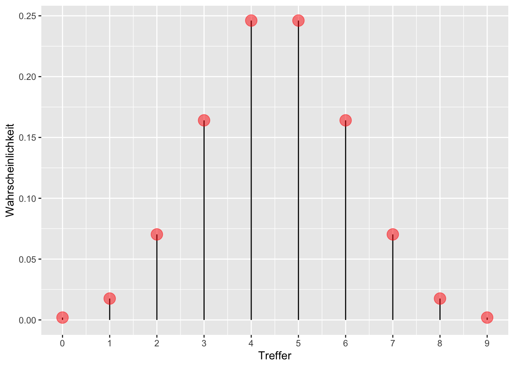

Code
library(tidyverse)
Nach Absolvieren des jeweiligen Kapitel sollen folgende Lernziele erreicht sein.
Sie können …
library(tidyverse)Bekanntlich segelte Kolumbus 1492 los, und entdeckte Amerika1. Das war aber ein glücklicher Zufall, denn auf seinem Globus existierte Amerika gar nicht. Vielleicht sah sein Globus so aus wie der von Behaim, s. Abb Abbildung 5.1.

Quelle: Ernst Ravenstein, Wikimedia, Public Domain
Die kleine Welt des Modells entsprach hier nicht der großen Welt, der echten Erdkugel.
Das ist ein Beispiel, das zeigt, wie Modellieren schiefgehen kann. Es ist aber auch ein Beispiel für, sagen wir, die Komplexität wissenschaftlicher (und sonstiger) Erkenntnis. Einfach gesagt: Glück gehört halt auch dazu.
Behaims Globus ist nicht gleich der Erde. Die kleine Welt von Behaims Globus ist nicht die große Welt, ist nicht die Erde.
Was in der kleinen Welt funktioniert, muss nicht in der großen Welt funktionieren. Modelle zeigen immer nur die kleine Welt: Vorsicht vor schnellen Schlüssen und vermeintlicher Gewissheit.
🏋 Nennen Sie ein Beispiel, in dem ein Modell nicht (exakt) der Wirklichkeit entspricht!

Der Golem von Prag, die Legende einer vom Menschen geschaffene Kreatur mit gewaltiger Kraft, die Befehle wörtlich ausführt. Die Geschichte besagt, dass ein Rabbi mit Zauberkräften den Golem aus Lehm erschuf, um die jüdische Bevölkerung der Stadt zu schätzen. Bei kluger Führung kann ein Golem Nützliches vollbringen. Bei unüberlegter Verwendung wird er jedoch großen Schaden anrichten.
Golem
Eigenschaften des Golems:
Modell
Eigenschaften des Modells:
flowchart LR X --> Y
Wir bauen Golems.
Vergleichen wir die kleine Welt unserer Modellen, wie Behaims Globus, mit der Großen Welt, die Kolumbus und wir befahren.
| Kleine Welt | Große Welt |
|---|---|
| Die Welt, wie sie der Golem sieht | Die Welt, wie sie in Wirklichkeit ist |
| ist das Modell, aber nicht (zwangsläufig) die Wirklichkeit | entspricht nicht (zwangsläufig) dem Modell |
| Verwenden wir beim Modellieren | Ist das, was wir modellieren |

🏋 Bayes-Inferenz ähnelt dem Lernen von Menschen. Geben Sie ein Beispiel von Lernen bei Menschen, das oben dargestelltem Prozess ähnelt!
Unsere Forschungsfrage lautet, mit welchem Anteil die Erde wohl mit Wasser bedeckt ist?

Quelle CC 4.0 BY-NC
Analog können wir uns vorstellen, 11 Wissenschaftlis haben jeweils eine andere Hypothese zum Wasseranteil, \(\pi\), der Erde. Die erste Person hat die Hypothese \(\pi_1 = 0\), die zweite Person geht von \(\pi_2 = 0.1\) aus … die 11. Person von \(\pi_{11} = 1\).
Um die Forschungsfage zu beantworten, werfen Sie einen Globus-Ball in die Luft und fangen in wieder auf. Sie notieren dann, ob die Stelle unter Ihrem Zeigefinger Wasser zeigt (W) oder Land (L). Den Versuch wiederholen Sie, bis Sie den Globusball insgesamt 9 Mal geworfen haben.
So sah mein2 Ergebnis aus:
\[W \quad L \quad W \quad W \quad W \quad L \quad W \quad L \quad W\]
🏋️️ Besorgen Sie sich einen Globus (zur Not eine Münze) und stellen Sie den Versuch nach!
Der physikalische Prozess, der zur Entstehung der Daten führt, nennt man den datengenierenden Prozess.
In diesem Fall kann man ihn so beschreiben:
🏋 Welche Annahmen würden Sie ändern? Welche könnte man wegnehmen? Welche hinzufügen? Was wären die Konsequenzen?
Für jede Hypothese haben wir ein Vorab-Wissen, das die jeweilige Plausibilität der Hypothese angibt: Priori-Verteilung.
Für jede Hypothese (d.h. jeden Parameterwert \(p\)) möchten wir wie wahrscheinlich die Daten sind (unter der Annahme, dass die Hypothese richtig ist). Das gibt uns den Likelihood.
Dann gewichten wir den Likelihood mit dem Vorabwissen, so dass wir die Posteriori-Verteilung3 bekommen.
Der Golem denkt eigentlich ganz vernünftig: Zuerst hat er ein Vorwissen zum Wasseranteil, die dazugehörige Wahrscheinlichkeitsverteilung nennt man Priori-Verteilung. In unserem Beispiel ist das Vorwissen recht bescheiden: Jeder Wasseranteil ist ihm gleich plausibel. Als nächstes beschaut sich der Golem die Daten und überlegt, wie wahrscheinlich die Daten sind, wenn man von einer bestimmten Hypothese ausgeht, z.B. dass der Wasseranteil 10% beträgt. Die zugehörige Wahrscheinlichkeit der Daten unter Annahme einer Hypothese nennt man die4 Likelihood. Als letztes bildet sich der Golem eine abschließende Meinung zur Wahrscheinlichkeit jeder Hypothese. Diese Wahrscheinlichkeitsverteilung nennt man Posteriori-Verteilung. Sie berechnet als Gewichtung des Vorwissen mit den neuen Daten. Anders gesagt: Das Vorwissen wird anhand der Erkenntnisse (der Daten) aktualisiert oder geupatedet, s. Abbildung 5.2.
graph LR A[Priori-Vert.]-->B[Likelihood]-->C[Post-Vert.]-->A
Wie wahrscheinlich ist es, einen bestimmten Wasseranteil, z.B. 6 Treffer, (bei 9) Würfen zu bekommen, wenn man eine bestimmte Hypothese (einen bestimmten Wasseranteil, z.B. 70%) annimmt? Diese Wahrscheinlichkeit hat einen eigenen Namen, weil sie eine wichtige Sache ist. Man mennt sie die Likelihood, \(L\)5.
Geht man von einer Binomialverteilng aus, ist die Likelihood einfach zu berechnen6.
Wenn wir eine Binomialverteilung annehmen, dann gehen wir davon aus, dass die Daten unabhängig voneinander entstehen und sich der Parameterwert nicht zwischenzeitlich ändert7. Der Wasseranteil der Erde bleibt während des Versuchs gleich (durchaus plausibel).
Lassen Sie uns im Folgenden die Wahrscheinlichkeit (\(Pr\)), \(W\) mal Wasser und \(L\) mal Land zu beobachten, wenn die Wahrscheinlichkeit für Wasser \(p\) beträgt, so bezeichnen: \((Pr(W,L | p))\). Diese Wahrscheinlichkeit, \((Pr(W,L | p))\), kann man mit der Binomialverteilung berechnen.
Möchte man die Wahrscheinlichkeit ansprechen für das Ereignis “5 mal Wasser und 2 mal Land, wenn wir von einem Wasseranteil von 70% ausgehen”, so würden wir kurz schreiben: \(Pr(W=5, L=2 | p=.7)\).
Die Binomialverteilung zeigt die Verteilung der Häufigkeit (Wahrscheinlichkeit) der Ereignisse (z.B. 2 Mal Kopf) beim wiederholten Münzwurf (und allen vergleichbaren Zufallsexperimenten): “Münzwurfverteilung”, s. Kap. Kapitel 4.4.
Die Formel der Binomialverteilung sieht so aus:
\[Pr(W,L|p) = \frac{(W+L)!}{W!L!}p^W(1-p)^L = k \cdot P(A) \tag{5.1}\]
Formel Gleichung 5.1 kann wie folgt auf Deutsch übersetzen:
Die Wahrscheinlichkeit für das Ereignis “W,L” gegeben p berechnet als Produkt von zwei Termen. Erstens der Quotient von der Fakultät von W plus L im Zähler und im Nenner das Produkt von erstens der Fakultät von W mit zweitens der Fakultät von L. Der zweite Term ist das Produkt von p hoch W mal der komplementären Wahrscheinlichkeit von p hoch L.
Oder noch kürzer:
Die Wahrscheinlichkeit für das Ereignis “W,L” gegeben p berechnet als Produkt von zwei Termen. Erstens der Anzahl der günstigen Pfade, k und zweitens der Wahrscheinlichkeit für einen günstigen Pfad, P(A).
Puh, Formeln sind vielleicht doch ganz praktisch, wenn man sich diese lange Übersetzung der Formel in Prosa duchliest. Noch praktischer ist es aber, dass es Rechenmaschinen gibt, die die Formel kennen und für uns ausrechnen. Los, R, mach mal.
Was ist der Anteil der gültigen Pfade in einem Baumdiagramm (Wahrscheinlichkeit), um 2 mal \(W\) bei \(N=W+L=3\) Würfen zu bekommen, wenn wir von \(p=1/2\) ausgehen?8.
dbinom(x = 2, size = 3, prob = 1/2)
## [1] 0.375Von den 8 Endkonten bzw. Pfaden sind 3 günstig. Demnach ist die Wahrscheinlichkeit des gesuchten Ereignis (2 Treffer bei 3 Würfen, binomialverteilt) gleich 3 von 8 (alle Pfade sind gleich wahrscheinlich); 3/8 sind 0.375.
flowchart TD A[A - Start] -. 1/2 .-> B[B - 0] A -. 1/2 .-> C[C - 1] B -. 1/2 .-> D[D - 0] B -. 1/2 .-> E[E - 1] C -. 1/2 .-> F[F - 0] C -. 1/2 .-> G[G - 1] D -. 1/2 .-> H[H - 0] D -. 1/2 .-> J[I - 1] E -. 1/2 .-> K[K - 0] E -. 1/2 .-> L[L - 1] F -. 1/2 .-> M[M - 0] F -. 1/2 .-> N[N - 1] G -. 1/2 .-> O[O - 0] G -. 1/2 .-> P[P - 1]
Abb. Abbildung 5.3 stellt einen einfachen Baum für 3 Globuswürfe mit je zwei möglichen Ereignissen (W vs. L) dar. In der ersten (obersten) Zeile (Knoten A; “Start”) ist Ausgangspunkt dargestellt: Der Globus ruht wurfbereit in unserer Hand. Jetzt Achtung: Sie werfen den Globusball hoch. Die Pfeile zeigen zu den (zwei) mögliche Ergebnissen. Die zweite Zeile (Knoten B und C) stellt die beiden Ergebnisse des Wurfes dar. Die Ergebnisse sind hier mit 0 und 1 bezeichnet (das eine eine einfache und weiteinsetzbare Notation). Die dritte Zeile (Knoten D bis G) stellt die Ergebnisse des des zweiten Wurfes dar. Die vierte Zeile (Knoten H bis P) stellt die Ergebnisse des des dritten Wurfes dar.
Für mehr Würfe würde das Diagramm irgendwann unübersichtlich werden.
Was ist der Anteil der gültigen Pfade in einem Baumdiagramm (Wahrscheinlichkeit), um 6 mal \(W\) bei \(N=W+L=9\) Würfen zu bekommen, wenn wir von \(p=1/2\) ausgehen?
dbinom(x = 6, size = 9, prob = 1/2)
## [1] 0.1640625Abb Abbildung 5.4 ist ein vergeblicher Versuch, so einen großen Baum (\(n=9\)) darzustellen.
Visualisierungen wie Baumdiagramme sind eine praktische Hilfe zum Verständnis, kommen aber bei größeren Daten schnell an ihre Grenze.

Jetzt folgen einige Beispiele.
Beispiel 5.1 (Globus mit 9 Treffern bei 9 Würfen) Was ist die Wahrscheinlichkeit für \(W=9\) bei \(N=9\) und \(p=1/2\)?
dbinom(x = 9, size = 9, prob = 1/2)
## [1] 0.001953125Das ist 1 günstiger Pfad von 512 Pfaden.
Beispiel 5.2 (Klausur mit 20-Richtig-Falsch-Fragen) Ei Professi stellt einen Klausur mit 20 Richtig-Falsch-Fragen. Wie groß ist die Wahrscheinlichkeit, durch bloßes Münze werfen genau 15 Fragen richtig zu raten?9.
dbinom(x = 15, size = 20, prob = .5)
## [1] 0.01478577Um höchstens 15 Treffer zu erzielen, müssten wir die Wahrscheinlichkeiten von 0 bis 15 Treffern addieren.
Praktischerweise gibt es einen R-Befehl, der das für uns übernimmt:
pbinom(q = 15, size = 20, prob = .5)
## [1] 0.994091Die Wahrscheinlichkeit 0, 1, 2, … oder 15 Treffer zu erzielen, liegt also bei gut 99%.
Beispiel 5.3 (3 Münzwürfe mit 3 Treffern) Was ist die Wahrscheinlichkeit bei 3 Münzwürfen (genau) 3 Treffer (Kopf) zu erzielen?
Das ist eine Frage an die Binomialverteilung; in R kann man das mit der Funktion dbinom beantworten.
dbinom(x = 3, size = 3, prob = 1/2)
## [1] 0.125dbinom gibt uns die Wahrscheinlichkeit von x Treffern, bei size Versuchen zurück, wobei eine Binomialverteilung angenommen wird mit Trefferwahrscheinlichkeit prob.
Wir fassen das Globusmodell so zusammen:
\[W \sim \text{Bin}(N,p),\]
Lies: “W ist binomial verteilt mit den Parametern \(N\) und \(p\)”. \(N\) gibt die Anzahl der Globuswürfe an: \(N=W+L\).
Unser Vorab-Wissen zu \(p\) sei, dass uns alle Werte gleich plausibel erscheinen (“uniform”):
\[p \sim \text{Unif}(0,1).\]
Lies: “\(p\) ist gleich (uniform) verteilt mit der Untergrenze 0 und der Obergrenze 1”.
Man könnte auch sagen: Wir haben praktisch kein Vorwissen, wir sind erstmal (aprior) indifferent, jeder Parameterwert erscheint uns erstmal gleich wahrscheinlich.
Abb. Abbildung 5.5 zeigt die Binomialverteilung \(X \sim Bin(9, 1/2)\).

🏋️️ Was fällt Ihnen bei der Binomialverteilung auf? Ist sie symmetrisch? Verändert sich die Wahrscheinlichkeit linear?
Die Wahrscheinlichkeit für Regen und kalt ist gleich der Wahrscheinlichkeit von Regen, gegeben kalt mal der Wahrscheinlichkeit von kalt. Entsprechend gilt: Die Wahrscheinlichkeit von \(W\), \(L\) und \(p\) ist das Produkt von \(Pr(W,L|p)\) und der Prior-Wahrscheinlichkeit \(Pr(p)\):
\[Pr(W,L,p) = Pr(W,L|p) \cdot Pr(p)\]
Genauso gilt: Die Wahrscheinlichkeit von Regen und kalt ist gleich der Wahrscheinlichkeit kalt, wenn’s regnet mal der Wahrscheinlichkeit von Regen:
\[Pr(W,L,p) = Pr(p|W,L) \cdot Pr(W, L)\]
Wir setzen die letzten beiden Gleichungen gleich:
\[Pr(W,L|p) \cdot Pr(p) = Pr(p|W,L) \cdot (W,L)\]
Und lösen auf nach der Posteriori-Wahrscheinlichkeit10, \(Pr(p|W,L)\):
\[Pr(p|W,L) = \frac{Pr(W,L|p) Pr(p)}{Pr(W,L)}\]
\(Pr(W,L)\) nennt man die mittlere Wahrscheinlichkeit der Daten oder Evidenz. Die Evidenz berechnet sich als Mittelwert der Likelihoods über alle Werte von \(p\). Die Aufgabe dieser Größe ist nur dafür zu sorgen, dass insgesamt Werte zwischen 0 und 1 herauskommen.
\[Pr(H|D) = \frac{Pr(D|H) Pr(H)}{Pr(D)} = \frac{\text{Likelihood} \cdot \text{Priori}}{\text{Evidenz}}\]
Bestandteile:
Posteriori-Wahrscheinlichkeit: \(Pr_{Post} := Pr(H|D)\)
Likelihood: \(L := Pr(D|H)\)
Priori-Wahrscheinlichkeit: \(Pr_{Priori} := Pr(H)\)
Evidenz: \(E := Pr(D)\)
Bayes’ Theorem gibt die \(Pr_{Post}\) an, wenn man die Gleichung mit der \(Pr_{Priori}\) und dem \(L\) füttert.
Bayes’ Theorem wird häufig verwendet, um die \(Pr_{Post}\) zu quantifizieren.
Die \(Pr_{Post}\) ist proportional zu \(L \times Pr_{Priori}\).
Die unstandardisierte Post-Wahrscheinlichkeit ist einfach das Produkt von Likelihood und Priori.
Das Standardisieren dient nur dazu, einen Wert zwischen 0 und 1 zu erhalten. Dies erreichen wir, indem wir durch die Summe aller Post-Wahrscheinlichkeiten dividieren. Die Summe der Post-Wahrscheinlichkeiten bezeichnet man (auch) als Evidenz, vgl. Gleichung Gleichung 5.2.
\[\text{Posteriori} = \frac{\text{Likelihood} \times \text{Priori}}{\text{Evidenz}} \tag{5.2}\]
Abb. Abbildung 5.6 visualisiert, dass die Post-Verteilung eine Gewichtung von Priori und Likelihood ist. Mathematisch gesprochen beruht diese Gewichtung auf einer einfachen Multiplikationen der beiden genannten Terme.

Golems können lernen?! Abbildung 5.7 zeigt die Post-Verteilung, nach \(n=1, 2, ...,n=9\) Datenpunkten, d.h. Würfen mit dem Globusball. Man sieht: Am Anfang, apriori, also bevor die Daten haben, vor dem ersten Wurf also, ist jeder Parameterwert gleich wahrscheinlich für den Golem (das Modell). Je nach Ergebnis des Wurfes verändert sich die Wahrscheinlichkeit der Parameterwerte, kurz gesagt, die Post-Verteilung verändert sich in Abhängigkeit von den Daten.

Insofern kann man sagen: Unser Golem (das Modell) lernt. Ob das Modell nützlich ist (präzise Vorhersagen liefert), steht auf einem anderen Blatt.
Wir erstellen uns eine kleine Tabelle, die man “Bayes-Gitter” nennen könnte. Dazu gehen wir so vor:
Für jeden “Gitterwert” berechnen wir eine (Post-)Wahrscheinlichkeit. Ein Gitterwert ist eine mögliche Ausprägung des Parameters. Häufig entspricht eine Hypothese einem Gitterwert, etwa wenn man sagt: “Ich glaube, die Münze ist fair”, was auf einem Parameterwert von 50% herausläuft. Dazu geben wir an, für wie wahrscheinlich wie apriori11 - also bevor wir irgendwelche Daten erheben - jeden einzelnen Gitterwert halten. Wir machen es uns hier einfach und halten jeden Gitterwert für gleich wahrscheinlich. Tatsächlich ist der konkrete Wert hier egal, entscheidend ist das Verhältnis der Apriori-Werte zueinander: Geben wir einigen Gitterwerten den Wert 2, aber anderen den Wert 1, so halten wir Erstere für (apriori) doppelt so plauibel wie Letztere. Der Likelihood wird in diesem Fall mit der Binomialverteilung berechnet. Der Likelihood gibt an, wie wahrscheinlich ein Gitterwert ist gegeben einem bestimmten apriori gewählten Parameterwert. Die “End-Wahrscheinlichkeit”, die unstandardisierte Post-Wahrscheinlichkeit, die “hinten rauskommt” ist das Produkt von Priori-Wert und Likelihood. Anschaulich gesprochen: Die Priori-Werte werden mit den Likelihoodwerten gewichtet12. Da wir letztlich eine Wahrscheinlichkeitverteilung bekommen möchten teilen wir jeden Posteriori-Wert durch die Summe aller Posteriori-Werte. Dadurch ist gerantiert, dass sich die Posteriori-Werte zu eins aufaddieren. Damit haben wir dann die Kolmogorov-Ansprüche an eine Wahrscheinlichkeitsverteilung erfüllt.
Legen wir uns eine Tabelle mit Gitterwerten an, um deren Posteriori-Wahrscheinlichkeit zu berechnen.
d <-
tibble(
# definiere die Hypothesen (das "Gitter"):
p_Gitter = seq(from = 0, to = 1, by = 0.1),
# bestimme den Priori-Wert:
Priori = 1) %>%
mutate(
# berechne Likelihood für jeden Gitterwert:
Likelihood = dbinom(6, size = 9, prob = p_Gitter),
# berechen unstand. Posteriori-Werte:
unstd_Post = Likelihood * Priori,
# berechne stand. Posteriori-Werte (summiert zu 1):
Post = unstd_Post / sum(unstd_Post)) Das “Bayes-Gitter” (Tabelle 5.1) zeigt, wie sich die Post-Verteilung berechnet.
| id | p_Gitter | Priori | Likelihood | unstd_Post | Post |
|---|---|---|---|---|---|
| 1 | 0.0 | 1 | 0.00 | 0.00 | 0.00 |
| 2 | 0.1 | 1 | 0.00 | 0.00 | 0.00 |
| 3 | 0.2 | 1 | 0.00 | 0.00 | 0.00 |
| 4 | 0.3 | 1 | 0.02 | 0.02 | 0.02 |
| 5 | 0.4 | 1 | 0.07 | 0.07 | 0.07 |
| 6 | 0.5 | 1 | 0.16 | 0.16 | 0.16 |
| 7 | 0.6 | 1 | 0.25 | 0.25 | 0.25 |
| 8 | 0.7 | 1 | 0.27 | 0.27 | 0.27 |
| 9 | 0.8 | 1 | 0.18 | 0.18 | 0.18 |
| 10 | 0.9 | 1 | 0.04 | 0.04 | 0.04 |
| 11 | 1.0 | 1 | 0.00 | 0.00 | 0.00 |
Für jede Hypothese (Spalte id) berechnen wir die unstandardisierte Posteriori-Wahrscheinlichkeit als Produkt von Priori und Likelihood:
\(\text{Post}_{\text{unstand}} = \text{Priori} \cdot \text{Likelihood}\)
Um zur standardisierten Posteriori-Wahrscheinlichkeit zu gelangten, teilen wir in jeder Zeile der Gitterbox (also für jede Hypothese) die unstandardisierte Post-Wahrscheinlichkeit durch die Summe der unstandardisierten Post-Wahrscheinlichkeiten.
🏋️ Was wohl mit Post passiert, wenn wir Priori ändern?
Die Posteriori-Verteilung (Kurz: “Post-Verteilung”), \(Pr_{Post}\), zeigt, wie plausibel wir jeden Wert von \(p\) halten.
Abbildung 5.8 zeigt die Post-Wahrscheinlichkeit für 5, 10 und 20 Gitterwerte. Das mittlere Teilbild (10 Gitterwerte) entspricht unserer Tabelle oben.

Unter sonst gleichen Umständen gilt:
Die Post-Verteilung ist sowas wie das Ziel all Ihrer Träume (falls Sie es noch nicht gewusst haben): Aus der Post-Verteilung können Sie ablesen, wie wahrscheinlich Ihre Hypothese (Ihr Lieblings-Parameterwert) ist. Und noch einiges mehr, aber das ist Thema des nächsten Kapitels.
In unserem Modell haben wir Annahmen zu \(Pr_{Priori}\) und \(L\) getroffen.
Auf dieser Basis hat der Golem sein Wissen geupdated zu \(Pr_{Post}\).
Mit der Gitter-Methode haben wir viele Hypothesen (Parameterwerte) untersucht und jeweils die \(Pr_{Post}\) berechnet.
Unser Modell bildet die kleine Welt ab; ob es in der großen Welt nützlich ist, steht auf einem anderen Blatt.
🏋️ Wenn Sie auf einen Prozentwert für \(W\) tippen müssten, welchen würden Sie nehmen, laut dem Modell (und gegeben der Daten)?
Das “Bayes-Paradox-Video” von 3b1b präsentiert eine gut verständliche Darstellung des Bayes-Theorem aus einer zwar nicht gleichen, aber ähnlichen Darstellung wie in diesem Kapitel.
Bourier (2018), Kap. 6.2 und 7.1 erläutern einige (grundlegende) theoretische Hintergründe zu diskreten Zufallsvariablen und Wahrscheinlichkeitsverteilungen. Wichtigstes Exemplar ist dabei die Binomialverteilung. McElreath (2020), Kap. 2, stellt das Globusmodell mit mehr Erläuterung und etwas mehr theoretischem Hintergrund vor.
wenn auch nicht als Erster↩︎
Ihr Ergebnis kann anders aussehen, schließlich ist es ja Zufall.↩︎
Anstatt von Priori liest man auch Prior; anstatt Posteriori auch Posterior↩︎
oder den?↩︎
\(\mathfrak{L}\) für Freunde alter Schriftarten↩︎
Ein Glück!↩︎
Die sog. “iid-Annahme”, independently and identically distributed: Jeder Wurf der Globusballes ist eine Realisation der gleichen Zufallsvariablen. Jeder Wurf ist unabhängig von allen anderen: Das Ergebnis eines Wurfes hat keinen (stochastischen) Einfluss auf ein Ergebnis anderer Würfe. Die Wahrscheinlichkeitsverteilung ist bei jedem Wurf identisch.↩︎
Allgemeiner spricht man auch von 2 Treffern bei 3 Würfen (d.h. 1 “Nicht-Treffer”, den wir als “Niete” bezeichnen). Treffer werden oft mit 1 und Nieten mit 0 bezeichnet↩︎
Hey, endlich mal was für echte Leben!↩︎
kürzen wir mit Post-Wahrscheinlichkeit or \(Pr(Post)\) ab↩︎
synonym: priori↩︎
synonym: Die Likelihoodwerte werden mit den Apriori-Werten gewichtet.↩︎
{kind=link}